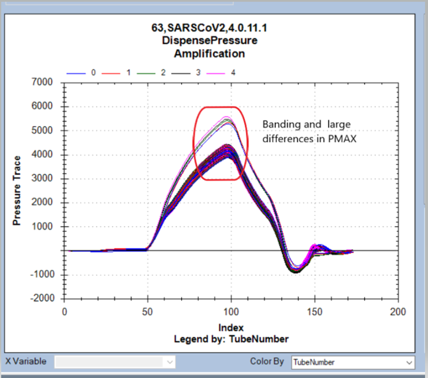
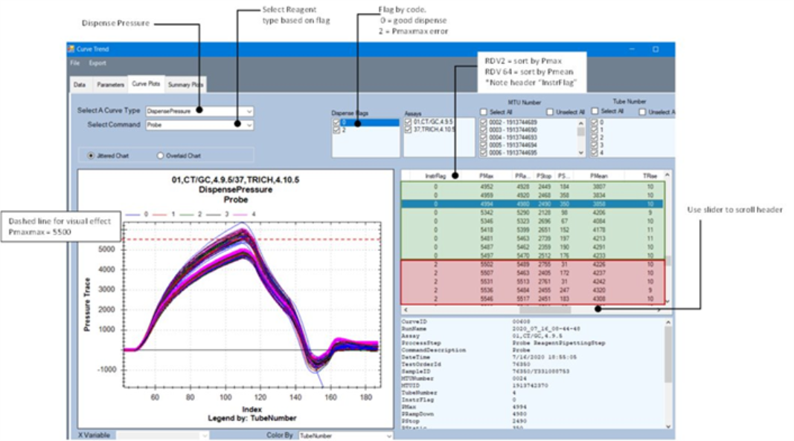
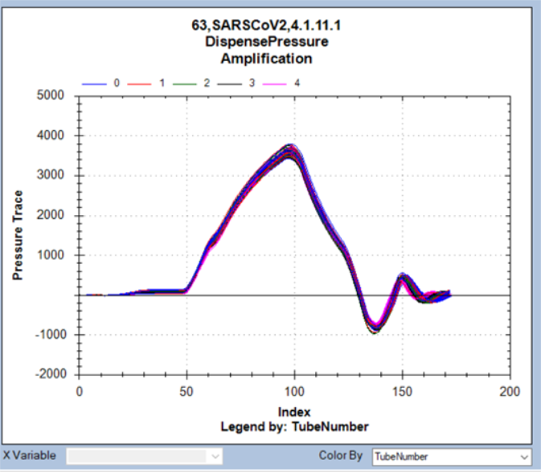
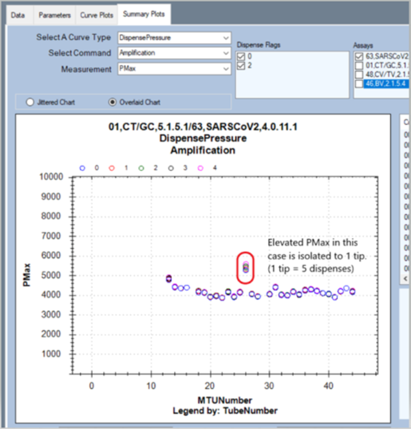
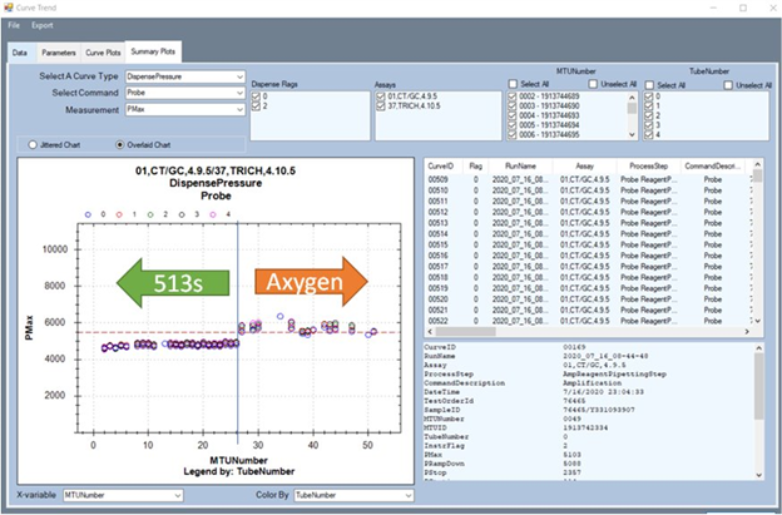
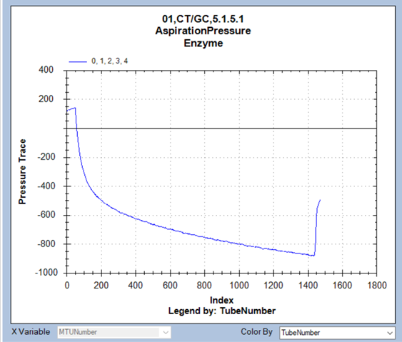
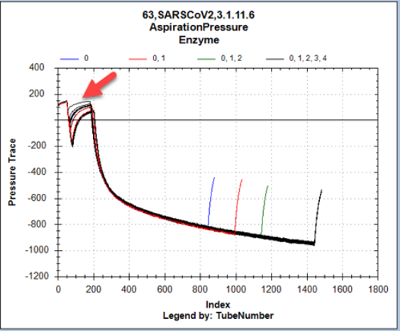
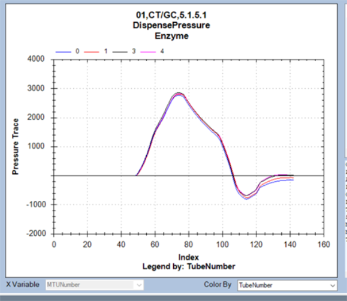
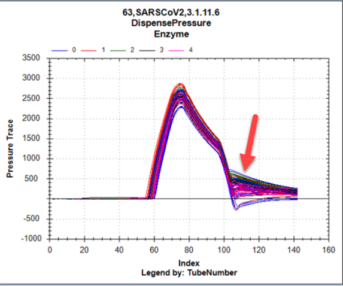
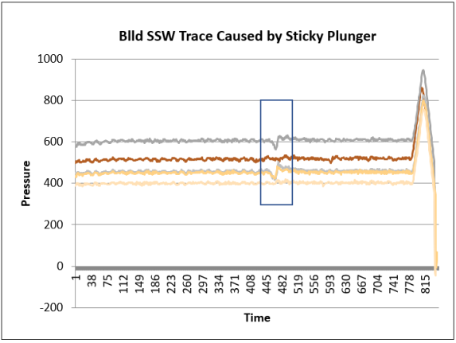

RDFA, RDFE, RDFP, RDFSL
Assay Processing Flags
Complaint Description:
Topic covers troubleshooting procedures for these Assay Processing Flags:
- RDFA = RDV Failure Amp
- RDFE = RDV Failure Enzyme
- RDFP = RDV Failure Probe
- RDFSL = RDV Failure Select
RDV Failure Amplification — RDV indicated a failure during the dispense of Reagent. There is an RDV error type message associated with each dispense failure; either 2, 64, 128, or a sum of any of these. For example, error type 192 means error type 64 and error type 128 both occurred.
- Error Type 2: Maximum pressure threshold exceeded.
- Error Type 64: Minimum mean pressure threshold not met.
- Error Type 128: Minimum pressure down time threshold not met.
TABLE OF CONTENTS
Technical Support
Foam reagent (typically error type 128)
Resolution
Pop the bubble(s).
Test
Visually check for bubbles in the bottle.
Pipettor tips damaged/wrong type (typically error type 2)
Resolution
-
Fix the hardware obstruction (reseat reagent bay lid and reinitialize instrument).
-
Use the correct tips (1mL Tecan or Biorear capacitive with filter).
RDFA and RDFP due to tips (these are examples using a known bad lot of tips):
(Notice the banding of the curve near Pmax.)
Example 1, RDFA:

Example 2 (RDFP):

What the Dispense Pressure Curve should look like (very little banding):

Alternately, data can be sorted by PMAX in the Summary Plots tab:

Example 2 (RDFP):

Test
- Visually verify damage to Pipettor tips.
- Determine where the obstruction occurs (typically reagent bay lid).
- Verify tips are not wrong type.
Pipettor tips lack filter (intermittent but persistent error type 64)
Resolution
Use the correct tips (1mL Tecan capacitive with filter).
Test
Visually verify the pipettor tips have the white filter.
Fluid viscosity (can be any of above three error types)
Resolution
Check if the reagent is “chunky” or contains particulate matter.
Test
Compare the dispense pressure against a good dispense curve (un-flagged dispense event).
Field Service
Precipitate in sample
TBD
Foam reagent
Resolution
Verify the customer's reagent preparation workflow.
Test
Use the Dashboard tool to check the dispense curves.
Pipettor tips damaged
Resolution
- Re-teach the Pipettor.
- Fix the hardware obstruction.
Test
- Visually verify the damage to the Pipettor tips.
- Determine where the obstruction occurs.
Pipettor tips lack filter (intermittent but persistent error type 64)
Resolution
Use the correct tips (1mL Tecan capacitive with filter).
Test
Visually verify the pipettor tips have the white filter.
Fluid viscosity
Resolution
- Check to see if the sample was properly stored.
- Check to be sure the reagent type matches the assay.
- Check to be sure the customer properly reconstituted the reagent.
Test
- Use the Dashboard tool or CurveTrend to check the aspiration and the dispense pressure curves.
- Compare the dispense pressure against a good dispense curve (un-flagged dispense event).
- Check the reagent for uniformity.
Sticky Pipettor Plunger
Resolution
-
Check the curve files for “Sticky Plunger” Curve profiles. Refer to the following examples.
Normal Aspiration:

Aspiration with a Sticky Plunger:

Normal Dispense:

Dispense with a Sticky Plunger - variation in the pull back section of dispense curve:

-
Perform testing for a sticky plunger by performing a bLLD test in SSW. Instructions to perform a bLLD test can be found in the Service Manual. Search for bLLD.
Sticky plunger in SSW bLLD trace:

- If verified, replace the Pipettor.
Test
Follow the instructions in the Panther Service Manual for replacing the Pipettor.
No liquid aspirated
Resolution
- Replace the reagent with a new reagent kit (possibly below the volume requirements).
- Re-teach the Pipettor.
- Replace the Pipettor.
Test
- Use the Dashboard tool to check the aspiration and the dispense curves.
- Verify the LLD height.
Leaky Pipettor
Resolution
- Tighten the Pipettor Ditty.
- Replace the Pipettor.
Test
- Check the Reagent Bay cover for drips.
- Check the Load Station for drips.
- Use the Dashboard tool to check aspiration curves.
- Check to see if the Pipettor DiTi is loose.
- Perform a pressure integrity test using the Service Software.
 button at the top of the page to send feedback, comments, or change requests.
button at the top of the page to send feedback, comments, or change requests.